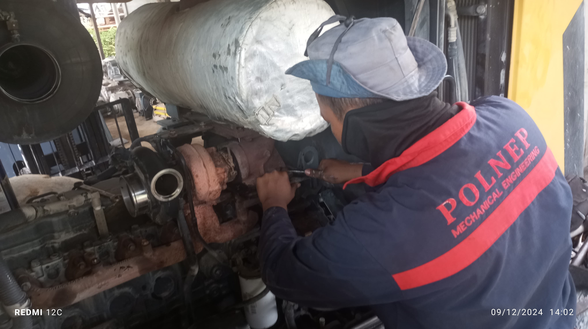
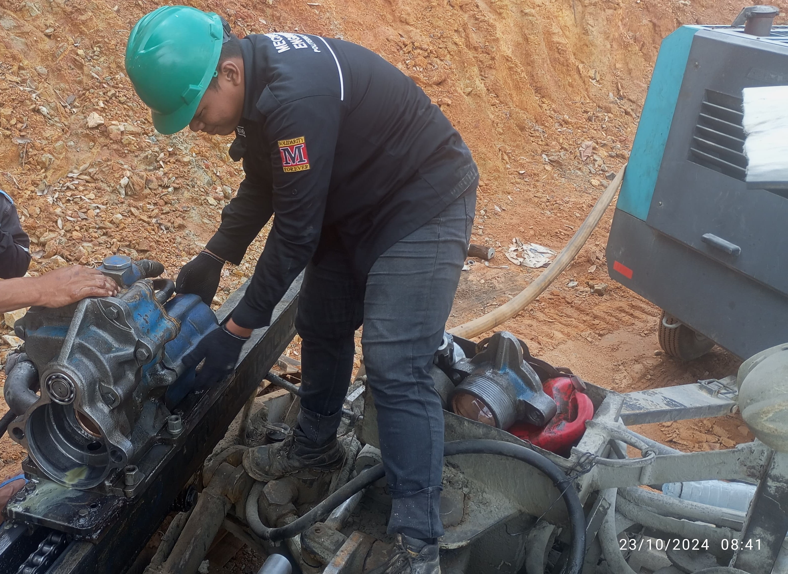
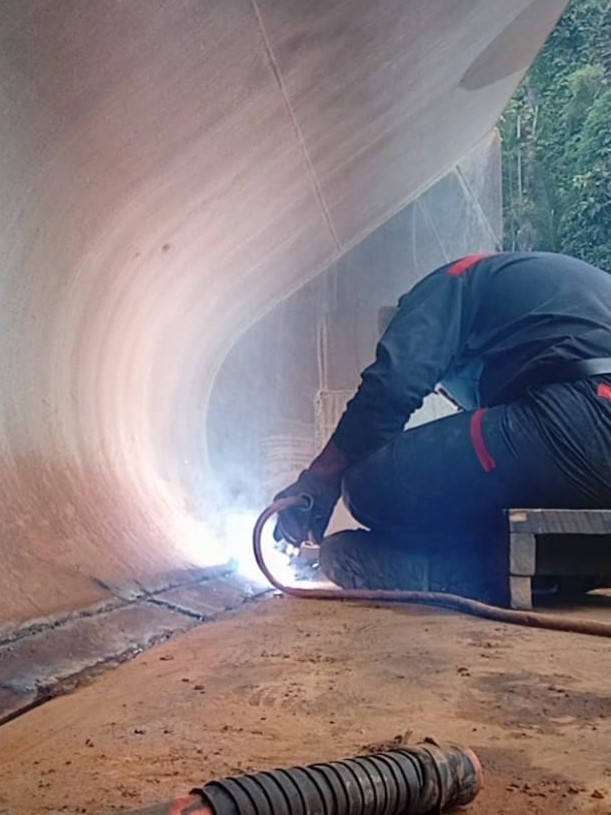
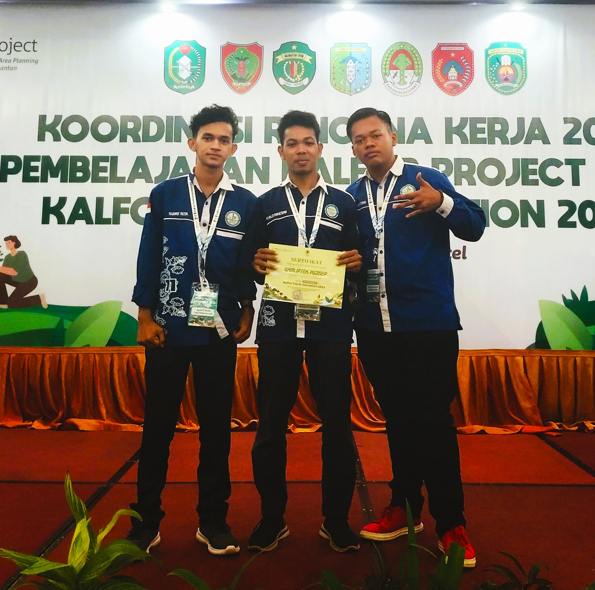
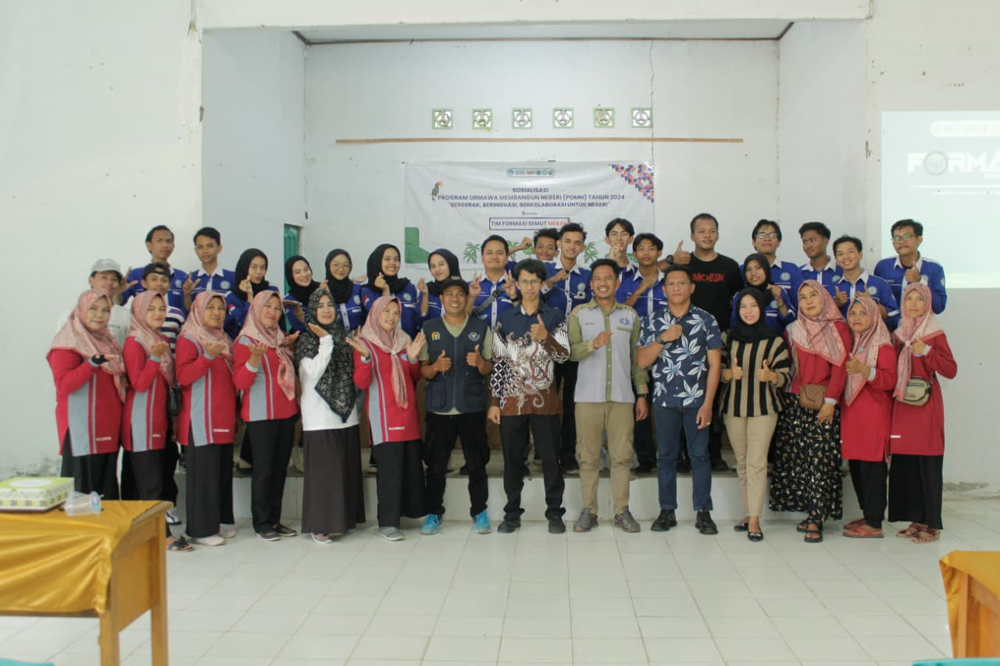

MY DESIGN INVENTOR
specialize in creating 3D designs using Autodesk Inventor, especially for machine and mechanical component designs.


EXPERIENCE
Mechanic Intern – PT Hasindo Mineral Persada (01 Oktober s/d 31 Desember 2024)

WHEEL LOADER

FURUKAWA PCR 200 CRD

WELDING
10 BEST TEAMS out of 1000 – KalFor Youth Innovation Activity by the Ministry of Environment and Forestry-UNDP (December 2023 – January 2024)

TEAM PARTICIPANTS

MY TEAM
Coordinator of the Implementation – National Development Organization Program (POMN) by DIKTI (July 2024 – November 2024)

TEAM POMN

KUPAH RIVER VILLAGE SOCIALIZATION
CONTACT

wiramahendra45@gmail.com

@_wira_m_67

linkedin.com/in/wira-mahendra-083b59382